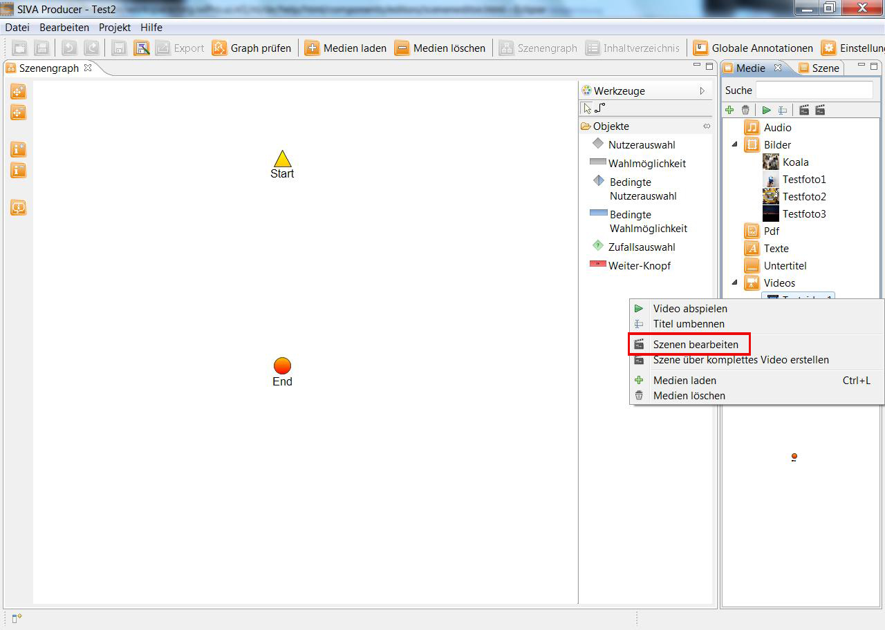

Szeneneditor
Mit dem Szeneneditor können aus den Videos Szenen gemacht werden, die Sie in Ihrem Projekt verwenden wollen.
Jedes Video muss zu einer Szene gemacht werden, bevor es benutzt werden kann.
Wollen Sie nicht das gesamte Video sondern lediglich einen oder mehrere Ausschnitte aus Ihrem Video in das Projekt
einfügen, so machen Sie einen Rechtsklick auf das Video im Medien-Repository und wählen "Szenen bearbeiten" aus um den
Szeneneditor zu öffnen.

Soll das gesamte Video in Ihrem Projekt verwendet werden, so wählen Sie "Szene über komplettes Video erstellen".
Das gesamte Video wird zu einer Szene umgewandelt und erscheint ab sofort im Szenen-Repository.

Haben Sie "Szenen bearbeiten" gewählt, so öffnet sich das Video im Szeneneditor und kann bearbeitet und zu
verwendbaren Szenen gemacht werden.
Der Szeneneditor besteht aus zwei Fenstern - dem unteren und dem
oberen Fenster.
Im oberen Fenster ist das gesamte Video abgebildet:

Hier können Sie das Video abspielen und es stehen Ihnen eine Reihe an Funktionen zur Verfügung:

-
es wird um eine Sekunde zurückgespult
 es wird um einen Frame zurückgespult
es wird um einen Frame zurückgespult-
Wiedergabe starten oder pausieren
-
Wiedergabe wird gestoppt
-
es wird um einen Frame vorwärts gespult
 es wird um eine Sekunde vorwärts gespult
es wird um eine Sekunde vorwärts gespult Ton an oder aus
Ton an oder aus Lautstärke verändern
Lautstärke verändern
Außerdem ist hier eine Übersicht über bereits definierte Szenen zu finden, wobei zwei verschiedene Ansichten möglich sind:
eine Detailansicht mit Szenenlänge und näheren Informationen zu den einzelnen Szenen (z.B. Startzeitpunkt, ein Screenshot
des ersten Szenenbildes, etc.) und eine platzsparende Ansicht, bei der nur die Länge und der Name der Szene angezeigt werden.
Um eine neue Szene aus dem im Szeneneditor geöffneten Video zu erstellen, klicken Sie auf
 .
Nun öffnet sich im unteren Fenster ein neuer Reiter in dem Sie eine neue Szene erstellen können.
.
Nun öffnet sich im unteren Fenster ein neuer Reiter in dem Sie eine neue Szene erstellen können.
Die Anzahl sowie eine Übersicht der erstellten Szenen des Videos wird Ihnen hier angezeigt:
Die erstellten Szenen können in unterschiedlicher Reihenfolge angezeigt werden. Indem Sie das Drop Down Menü
aufklappen können Sie per Mausklick entscheiden, nach welchen Kriterien die Szenen in der Ansicht sortiert werden
sollen. Hier stehen Ihnen 4 Möglichkeiten zur Verfügung: Sortierung nach Name, Startzeit, Endzeit oder Dauer der
Szene.

Sie können auch entscheiden, ob die Szenen im Übersichtsfenster auf- oder absteigend sortiert werden sollen.

Im unteren Fenster können einzelne Ausschnitte des Videos zu Szenen geschnitten
und gespeichert werden.
Die Zeitpunkte zu denen die Szene starten und enden soll können auf verschiedene Arten definiert werden:

- Eine Möglichkeit ist sie direkt im Zeiteingabefeld einzugeben.
- Sie können die Startzeit auch einfach mit einem Klick der linken Maustaste und die Endzeit mit einem Klick der
rechten Maustaste im Zeitbalken setzen.
- Des Weiteren können Sie den gelben Marker für das Setzen des Startzeitpunkts und den roten Merker für das Setzen
des Endzeitpunkts verschieben indem Sie die linke Maustaste dabei gedrückt halten.
- Außerdem können Sie im oberen Fenster den grauen Marker an den gewünschten Start- und Endpunkt bringen und mit Hilfe
der Buttons "Startpunkt" und "Endpunkt" festlegen.
Sie können Ihre Szenen im Feld "Name der Szene" beliebig benennen.
In dem Feld "Schlüsselwörter" können Sie Wörter, die die Szene genauer beschreiben,
eingeben. Dies hilft bei späteren Suchen. Die Begriffe sollten durch ein Komma separiert werden.

Indem Sie auf das Bild im unteren Fenster des Szeneneditors klicken können Sie ein Bild auswählen,
das als Vorschaubild für die Szene dienen soll.
Dieses Vorschaubild ist fest mit der Szene verbunden. Für jedes Element aus dem Medien-Repository gibt es nur ein Vorschaubild.
Es öffnet sich ein Fenster, in welchem Ihnen dieselben Funktionen wie im oberen Fenster der Szenenbearbeitung zur
Verfügung stehen. Das Bild, das an der Stelle liegt, an der der graue Marker positioniert ist, wird Ihnen in der
Vorschau angezeigt. Haben Sie sich für ein passendes Vorschaubild für Ihre Szene entschieden, so klicken Sie auf
"Select current image".

Ist Ihre Szene fertig, klicken Sie auf "Szene speichern". Wollen Sie eine weitere Szene aus dem Video erstellen,
so klicken Sie auf "Szene speichern und neue Szene anlegen".
Ab sofort ist die Szene in Ihrem Szenen-Repository gespeichert und kann für Ihr Projekt verwendet werden.